Leans; birden fazla apartmanı, siteyi veya iş merkezini tek panelden yöneten web tabanlı bir yönetim ve muhasebe sistemidir.
Sistem iki yüzden oluşur:
Yönetim paneli: yönetici, muhasebeci ve izleyicinin kullandığı ana ekranlar. Aidat yazma, tahsilat, gider, kasa, banka, raporlar, toplantı, arıza, rezervasyon vb. her şey buradan yapılır.
Sakin portalı ve mobil uygulama: sakinin kendi borcunu gördüğü, arıza talebi açtığı, ankete oy verdiği, rezervasyon yaptığı ve duyuruları okuduğu bölüm. Web portalı hazır, mobil uygulama için API hazır.
Kim ne yapabilir?
Rol
Nerede
Yetkisi
Süper admin
Tüm sistem
Bütün siteler, kullanıcı oluşturma ve rol verme, sistem denetim kayıtları, yedek alma ve geri yükleme.
Site sahibi
Kendi sitesi
Siteyi oluşturan kişi. Yönetici yetkilerine ek olarak dönem ve yıl kapatma, dönemi geri açma, siteyi sıfırlama ve silme yalnızca ondadır.
Varsayılan olarak her modülde yalnızca görüntüleme (ör. denetçi, yönetim kurulu üyesi).
Sakin
Portal / mobil
Yalnızca bağlı olduğu dairenin borcu, bildirimleri, anketleri, talepleri, rezervasyonları ve toplantıları.
Önemli: Yetki yalnızca menüde gizlenmez, sunucu tarafında zorlanır. Muhasebecinin yetkisi olmayan bir sayfanın adresini elle yazsa bile "yetkiniz yok" (403) hatası alır; yetkisi olmayan butonlar sayfadan otomatik çıkarılır.
2Temel kavramlar (5 dakikada muhasebe)
Sistemi anlatabilmek için bilmen gereken 8 kavram. Hepsi bir dairenin hesabı etrafında döner.
Kavram
Ne demek?
Örnek
Tahakkuk (borç yazma)
Daireye borç kaydı açmak. Para henüz gelmedi ama gelir doğdu.
A-5'e Kasım aidatı 1.000 TL yazıldı.
Tahsilat
Daireden para almak. Kasa artar, borç düşer.
A-5 1.000 TL ödedi, borç kapandı.
Avans
Dairenin borcundan fazla ödediği para; daire bizde alacaklıdır.
1.500 TL ödedi: 1.000 borca, 500 avansa.
Mahsup
Avansın yeni bir borca otomatik düşülmesi.
Aralık aidatı yazılınca 500 TL avans düşüldü, kalan borç 500.
Kasa
Paranın durduğu yer: nakit kasa, banka hesabı veya döviz kasası.
Merkez Kasa, Ziraat Bankası, USD Kasa.
Yevmiye (çift taraflı kayıt)
Her para hareketi iki satır yazar: bir borç, bir alacak. İkisi hep eşittir.
Sakin 1.500 TL öder: Sistem parayı en eski vadeli borca yatırır. Borç kapanır, kalan 500 TL avans olur.
Ertesi ay 1.000 TL aidat yazılır: 500 TL avans otomatik düşülür. Kalan borç 500. Sakinin bir şey yapmasına gerek yoktur.
İlk ödeme yanlışsa iptal edilir: Ama avansı başka borçta kullanılmışsa sistem önce o borcun iptal edilmesini ister. Böylece bakiye hiçbir zaman bozulmaz.
Patrona söyle: "Her daire bir banka hesabı gibi. Aidat borç yazar, ödeme düşer, fazlası avans olur ve sonraki borca kendiliğinden düşer. Hiçbir kayıt silinmez, düzeltme ters kayıtla yapılır; o yüzden her kuruşun izi var."
3Ekran düzeni ve menü haritası
Her sayfa aynı iskeleti kullanır. Bu düzeni bir kez öğrenince bütün sistemde rahat gezersin.
Ekranın bölümleri
Sol dar menü (ikonlar): En üstte ⚡ logo (Genel Portföy Panosu), altında + (yeni kayıt kısayolu) ve ana pano ikonları, sonra 8 menü grubu. Bir ikonun üzerine gelince alt sayfaları açılır. En altta ayarlar ve hesabın (baş harfin) var.
Üst çubuk (sağ üst):Setup (kurulum rehberi), Koyu/Açık Tema, aktif site seçici (hangi sitedeysen onun adı yazar, tıklayıp başka siteye geçersin), site ayarları, son işlemler, arama (daire, sakin, borç, talep, gider arar), bildirim zili ve hesap menüsü (şifre, iki adımlı doğrulama, çıkış).
Sayfa başlığı: Sayfanın adı ve altında hangi site için açık olduğu.
Özet kartları: Çoğu sayfanın üstünde 4-6 kutu (KPI) ve grafikler bulunur. Ör. tahsilat sayfasında 'Bu ay tahsilat', 'Ödeme yapan daire'.
İşlem alanı: '+ Yeni …' başlıklı açılır form kartları. Tıklayınca form açılır.
Liste / tablo: Filtreler, sekmeler (ör. Bekleyen / İşlenen), satır sonunda Düzenle, Sil, Detay, Makbuz gibi düğmeler.
Excel'e aktar ve Yazdır / PDF: Muhasebe ve rapor sayfalarının sağ üstünde.
8 menü grubu: ne yapacaksan nereye gidersin?
Menü grubu
Alt sayfalar
Burada ne yapılır
Yapı, Daire & Sakinler
Konut & Siteler · Blok, Daire & Gruplar · Sakin & Üye Listesi · Sakin & Taşınma Geçmişi · Sistem Kullanıcıları · Emlak Portföyü
Site, blok, daire ve sakin kaydı; kullanıcılar; emlak ilanları.
Tahakkuk, Aidat & Sayaç
Aidat & Otomatik Tahakkuk · Borçlandırma & Taksit / İcra · Gecikme Zammı Motoru · Sayaç & Endeks Okuma · Sayaç Faturası Dağıtımı
Görev & Bakım Takibi · Stok & Sarf Malzeme · Demirbaş & Zimmet Kaydı · Ortak Alan Rezervasyonu · Güvenlik, Ziyaretçi & Kargo · Arıza & Destek Talepleri
Günlük işletme ve saha işleri.
Kurul, İletişim & Arşiv
Genel Kurul & Toplantılar · Karar Defteri · Duyuru Panosu · Sakin Anketleri & Oylama · Toplu Bildirim Gönderimi · Otomatik Borç Hatırlatıcı · Dijital Belge Arşivi
Sakinlerle iletişim, kurul ve belgeler.
Rapor, Denetim & Ayarlar
Rapor Merkezi (PDF / CSV) · İşlem & Denetim Kayıtları · Site Ayarları & Yöneticiler
Raporlar, kim ne yaptı kaydı, site ayarları ve izinler.
İpucu: Menü kişiye göre filtrelenir. Muhasebecinin "erişim yok" olduğu modül menüde hiç görünmez. Sayfaların çoğu birbirine bağlantı verir: bir borç satırından tahsilata, bir yaşlandırma satırından daire ekstresine, bir tahsilattan makbuza tek tıkla geçilir.
4Giriş, hesap ve panolar
Sisteme giriş ve ilk karşılaşılan ekranlar.
Giriş ekranı
Menü: —Adres:/login
Sisteme e-posta ve şifreyle girilen ekran. Yönetici de sakin de buradan girer; sistem kullanıcının rolüne göre paneli veya sakin portalını açar.
Bu sayfada ne yapılır?
E-posta ve şifreyle giriş (Göster düğmesi şifreyi gösterir).
Şifremi unuttum: e-postaya sıfırlama bağlantısı gönderir (/forgot-password).
İki adımlı doğrulama açıksa: şifreden sonra telefondaki 6 haneli kod veya kurtarma kodu istenir.
Hesap aç: sakinler davet koduyla kendi hesabını açar (/portal/join).
Demo kurulumda 'Demo yönetici' ve 'Demo sakin' hızlı giriş düğmeleri bulunur.
Kurallar ve dikkat edilecekler
Çok sayıda hatalı giriş denemesi geçici olarak engellenir (hız sınırı).
Demo hesapları canlı ortamda bırakılmamalıdır; üretim kontrolü bunu engel olarak raporlar.
Genel Portföy Panosu
Menü: ⚡ logo / Genel Portföy PanosuAdres:/
Yöneticinin eriştiği tüm sitelerin tek bakışta özeti. Patrona ilk göstereceğin ekran budur.
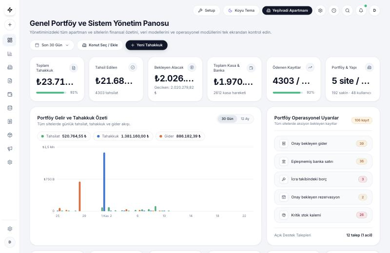
Genel Portföy Panosu ekranı (demo veri)
Bu sayfada ne yapılır?
Özet kartları: Toplam tahakkuk, tahsil edilen, bekleyen alacak (gecikmiş dahil), toplam kasa ve banka, ödenen kayıtlar, portföy ve yapı (site, sakin, kullanıcı sayısı).
Portföy Gelir ve Tahakkuk Özeti grafiği: Tüm sitelerde günlük tahsilat, tahakkuk ve gider. Sağ üstten 30 gün / 12 ay seçilir.
Portföy Operasyonel Uyarılar: Onay bekleyen gider, eşleşmemiş banka satırı, icra takibindeki borç, onay bekleyen rezervasyon, kritik stok kalemi, açık destek talepleri. Her satır ilgili sayfaya götürür.
Alt bölümde: Yönetilen Siteler, Son İşlemler ve Kullanıcılar sekmeleri.
Konut Seç / Ekle ile siteye geç, Yeni Tahakkuk ile borç yazma ekranına git.
Bağlantılı sayfalar
Konut & Siteler · Site Finans Panosu · Sistem Kullanıcıları
Patrona söyle: "Beş sitenin toplam tahsilatını, borcunu, kasasını ve bekleyen işlerini tek ekranda görüyorum."
Site Finans Panosu
Menü: Sol menü / Site Finans PanosuAdres:/sites/{id}
Seçili tek sitenin yönetim ve muhasebe panosu. Bir siteye girince ilk açılan sayfadır.
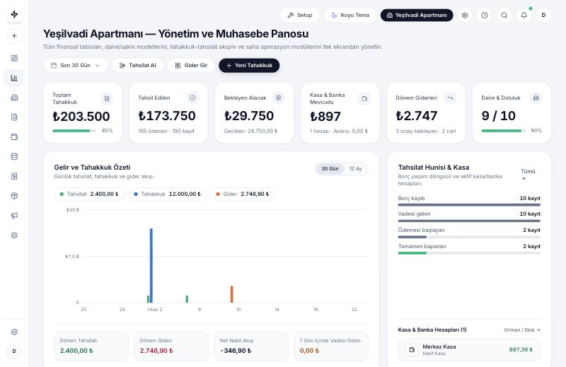
Site Finans Panosu ekranı (demo veri)
Bu sayfada ne yapılır?
Kartlar: Toplam tahakkuk (tahsil oranıyla), tahsil edilen, bekleyen alacak (geciken kısmı), kasa ve banka mevcudu (avans bilgisiyle), dönem giderleri (onay bekleyen sayısı), daire ve doluluk.
Gelir ve Tahakkuk Özeti: Günlük tahsilat, tahakkuk ve gider grafiği; altında dönem tahsilatı, dönem gideri, net nakit akışı ve 7 gün içinde vadesi gelen borç.
Tahsilat Hunisi & Kasa: Borç kaydı → vadesi gelen → ödemesi başlayan → tamamen kapanan; altında kasa ve banka hesapları ve 'Virman / Ekle' kısayolu.
Son Hareketler ve Borçlu Daireler listeleri.
Üstte hızlı düğmeler: Tahsilat Al, Gider Gir, Yeni Tahakkuk.
Bağlantılı sayfalar
Tahsilat · Gider Yönetimi · Borçlandırma · Kasa & Banka
Hesabım: şifre ve iki adımlı doğrulama
Menü: Sağ üst hesap menüsüAdres:/account/password · /account/two-factor
Kullanıcının kendi güvenlik ayarları.
Bu sayfada ne yapılır?
Şifremi Değiştir: mevcut şifre, yeni şifre (en az 8 karakter) ve tekrarı.
İki Adımlı Doğrulama: Kuruluma başla → telefonda Google Authenticator vb. ile QR kodu okut (okutamazsan anahtarı elle gir) → 6 haneli kodla onayla. Açıldıktan sonra kurtarma kodları gösterilir; yenilenebilir. Kapatmak için mevcut şifre istenir.
Kurallar ve dikkat edilecekler
Telefonunu ve kurtarma kodlarını kaybeden yöneticinin iki adımlı doğrulaması sunucudan komutla kapatılabilir (php artisan app:disable-two-factor e-posta).
Erişebildiğin bütün siteler kart olarak listelenir; yeni site buradan açılır.
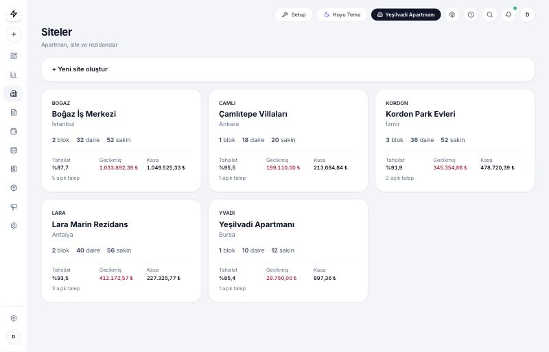
Konut & Siteler ekranı (demo veri)
Bu sayfada ne yapılır?
Her kartta: site kodu, adı, şehri, blok / daire / sakin sayısı, tahsilat oranı, gecikmiş borç, kasa ve açık talep sayısı. Karta tıklayınca Site Finans Panosu açılır.
+ Yeni site oluştur: Site adı, site kodu (davet kodlarında kullanılır, ör. YVADI), şehir, bloklar (virgülle: A,B,C) ve adres.
Kurallar ve dikkat edilecekler
Site oluşunca 'Merkez Kasa' ve standart gelir / gider kategorileri otomatik eklenir.
Sitenin fiziksel yapısı: bloklar, daireler ve daire grupları. Sistemin merkezi dairedir; borç kişiye değil daireye yazılır.
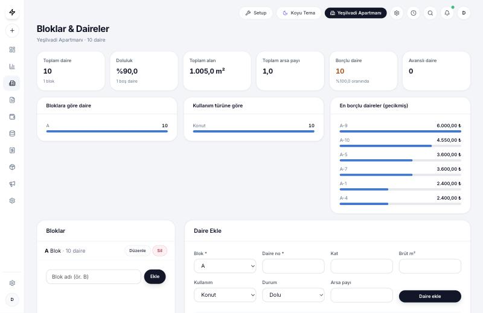
Blok, Daire & Gruplar ekranı (demo veri)
Bu sayfada ne yapılır?
Özet: toplam daire, doluluk, toplam alan (m²), toplam arsa payı, borçlu daire, avanslı daire; bloklara ve kullanım türüne göre dağılım; en borçlu daireler.
Bloklar: blok ekle, adını düzenle, sil.
Daire Ekle: blok, daire no, kat, brüt m², kullanım (konut, işyeri…), durum (dolu / boş), arsa payı.
Toplu ekle: blok, ilk no ve son no girip tek seferde onlarca daire oluştur (m² isteğe bağlı).
Daireler listesi: her daireyi düzenle veya sil; daire adına tıklayınca daire detayı açılır.
Daire Grupları: ör. 'Dükkanlar', 'Çatı katları'. Borç dağıtırken hedef olarak seçilebilir.
Kurallar ve dikkat edilecekler
Açık borcu, avans bakiyesi veya kayıtlı sakini olan daire silinemez.
m² ve arsa payı, m² başına ve arsa payına göre aidat hesabında kullanılır; boş bırakılan daire o tanımda atlanır ve raporlanır.
Menü: Daire listesinde daireye tıklaAdres:/sites/{id}/units/{daire}
Tek dairenin kimlik kartı.
Bu sayfada ne yapılır?
Dairedeki sakinler, dairenin bütün borçları ve ödemeleri.
Kısayollar: bu daireden tahsilat al, hesap ekstresini aç.
Sakin & Üye Listesi
Menü: Yapı, Daire & Sakinler → Sakin & Üye ListesiAdres:/sites/{id}/members
Dairelerde oturan mülk sahipleri ve kiracılar.
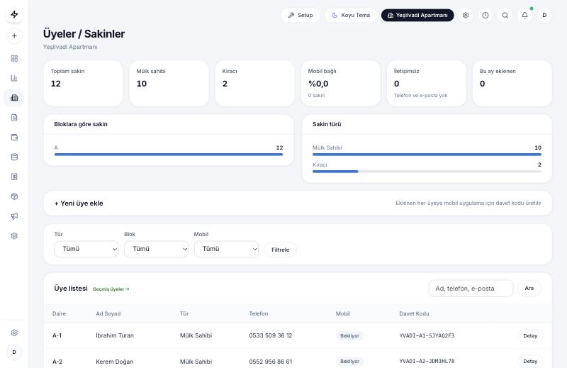
Sakin & Üye Listesi ekranı (demo veri)
Bu sayfada ne yapılır?
Özet: toplam sakin, mülk sahibi, kiracı, mobil bağlı oranı, iletişimsiz (telefon ve e-postası olmayan), bu ay eklenen.
+ Yeni üye ekle: daire, tür (Mülk Sahibi / Kiracı), ad soyad, telefon, e-posta, daireye giriş tarihi, TC kimlik no, acil durum telefonu, adres, notlar.
Eklenen her üyeye otomatik davet kodu üretilir (ör. YVADI-A1-SJYAQ2F3). Sakin bu kodla portalda veya mobil uygulamada kendi hesabını bağlar.
Filtre: tür, blok, mobil durumu; ad, telefon, e-posta ile arama. Satırda Detay.
Bağlantılı sayfalar
Üye detayı · Sakin & Taşınma Geçmişi
Üye detayı
Menü: Sakin listesinde DetayAdres:/sites/{id}/members/{üye}
Tek sakinin bilgileri ve mobil erişimi.
Bu sayfada ne yapılır?
Bilgileri düzenle ve kaydet.
Mobil erişim: 'Yeni davet kodu üret' (eski kod geçersiz olur) ve 'Mobil bağlantıyı kaldır' (sakinin hesapla bağı kopar, yeni kod üretilir).
Geçmişe taşı (daireden ayrıldı / devir): ayrılış tarihi ve neden. Üye silinmez, geçmişe taşınır; mobil erişimi hemen biter.
Kalıcı olarak sil: yalnızca hiçbir tahsilatta 'ödeyen' olarak geçmiyorsa.
Kurallar ve dikkat edilecekler
Sakin taşınsa bile eski borçlar dairede kalır; yeni sakin dairenin hesabını devralır.
Daireden ayrılan veya devreden eski sakinlerin listesi.
Bu sayfada ne yapılır?
Geri al: yanlışlıkla geçmişe taşınan üyeyi geri getirir.
Kalıcı sil: tahsilatta ödeyen olarak geçmiyorsa tamamen siler.
Sistem Kullanıcıları
Menü: Yapı, Daire & Sakinler → Sistem KullanıcılarıAdres:/users
Sisteme giriş yapan hesaplar. Yönetici yalnızca kendi sitelerinin sakinlerini ve yöneticilerini görür; süper admin herkesi görür.
Bu sayfada ne yapılır?
Filtrele ve listele; kullanıcıya tıklayınca detay: yetki, yönettiği siteler, daireleri, borçları.
Yalnızca süper admin: kullanıcı oluştur (ad, e-posta, şifre, rol, sakinse blok/daire ve sakin türü), rolünü değiştir, bilgilerini güncelle, kullanıcıyı sil.
Satılık / kiralık emlak ilanlarının kaydı. Muhasebeden bağımsız ek bir modüldür.
Bu sayfada ne yapılır?
İlan ekle: başlık, kategori, durum, fiyat, konum, video bağlantısı, açıklama, özellikler, en fazla 10 görsel (her biri 5 MB), danışman ve telefonu.
Filtrele, düzenle, sil.
6Tahakkuk, Aidat & Sayaç
Dairelere borç yazmanın bütün yolları: düzenli aidat, tek seferlik borç, gecikme zammı, sayaç faturası, ayrıca giderin daireye yansıtılması (Bölüm 9) ve ücretli rezervasyon (Bölüm 10).
Aidat & Otomatik Tahakkuk
Menü: Tahakkuk, Aidat & Sayaç → Aidat & Otomatik TahakkukAdres:/sites/{id}/dues
Aidat motoru. Bir kez tanım yaparsın, sistem her ay ilgili dairelere borcu kendisi yazar.
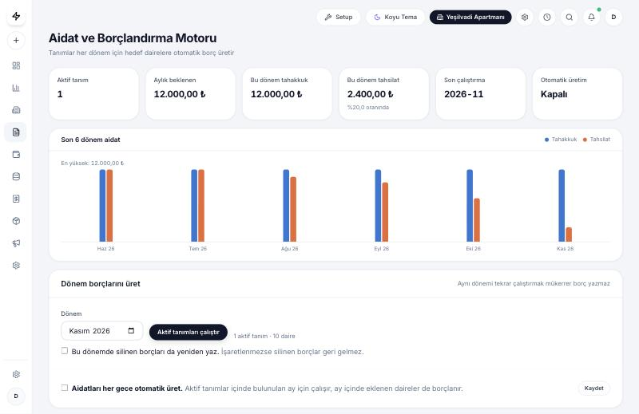
Aidat & Otomatik Tahakkuk ekranı (demo veri)
Bu sayfada ne yapılır?
Özet: aktif tanım sayısı, aylık beklenen, bu dönem tahakkuk ve tahsilat, son çalıştırma dönemi, otomatik üretim açık/kapalı; son 6 dönem tahakkuk-tahsilat grafiği.
Aidat / borç tanımı: ad (ör. Aidat, Yakıt Avansı), hesaplama (Sabit tutar daire başı · m² başına · Arsa payına göre: toplam tutar dairelere bölünür), sorumlu (mülk sahibi / kiracı / daire geneli), tutar, son ödeme günü (ayın kaçı), hedef (tüm site / blok / tek daire), kategori.
Tanımı düzenle, aktif/pasif yap, sil.
Dönem borçlarını üret: dönemi (ay) seç → Aktif tanımları çalıştır. 'Bu dönemde silinen borçları da yeniden yaz' işaretlenmezse silinmiş borçlar geri gelmez.
Aidatları her gece otomatik üret: açılırsa sistem her gece o ayın borçlarını yazar; ay içinde eklenen daireler de borçlanır.
Adım adım
Tanımı oluştur (ör. Aidat, Sabit, 1.200 TL, vade günü 20, hedef tüm site).
Dönemi seç ve 'Aktif tanımları çalıştır'.
Sonuç mesajında kaç borç yazıldığını, kaçının zaten var olduğu için atlandığını gör.
İstersen otomatik üretimi aç; bir daha elle çalıştırmana gerek kalmaz.
Kurallar ve dikkat edilecekler
Mükerrer olmaz: Aynı dönemi tekrar çalıştırmak ikinci borç yazmaz (her borcun dönem + tanım + daire anahtarı vardır).
Tanımda yapılan değişiklik sonraki üretimlerde geçerlidir; yazılmış borçlar değişmez.
Kayıtlı ayın günü kısa aya denk gelirse (ör. 31 Şubat) ayın son gününe çekilir.
Dairenin avansı varsa yeni borçtan otomatik düşülür.
Kapalı döneme aidat üretilemez.
Patrona söyle: "Aidatı her ay elle yazmıyoruz; tanımı bir kez yapıyoruz, gece kendiliğinden yazılıyor. İki kez çalışsa bile mükerrer borç oluşmuyor."
Aidat dışı tek seferlik borçlar (ek bütçe, tamirat payı, demirbaş katkısı) ve bütün borç kayıtlarının yönetimi.
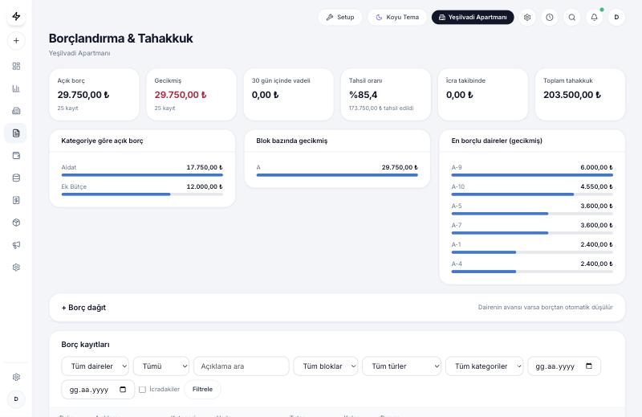
Borçlandırma & Taksit / İcra ekranı (demo veri)
Bu sayfada ne yapılır?
Özet: açık borç, gecikmiş, 30 gün içinde vadeli, tahsil oranı, icra takibinde, toplam tahakkuk; kategoriye ve bloğa göre açık borç; en borçlu daireler.
+ Borç dağıt: hedef (tüm daireler / blok / grup / tek daire), kategori, açıklama, daire başı tutar, sorumlu, son ödeme tarihi → Borçları oluştur. Dairenin avansı varsa borçtan otomatik düşülür.
Borç kayıtları: daire, durum, açıklama, blok, tür, kategori, tarih aralığı ve 'İcradakiler' ile filtre.
Satır işlemleri: Düzenle (açıklama, vade, tutar, kategori, sorumlu), Sil, Taksitlendir (taksit sayısı 2-36, ilk taksit tarihi, aralık 1-12 ay), İcra işaretle / kaldır (not ile).
Kurallar ve dikkat edilecekler
Ödeme alınmış borcun yalnızca açıklaması ve vadesi değişir; tutar ve kategori değiştirilemez.
Tahsilat yapılmış borç silinemez; önce tahsilat iptal edilmelidir.
Silinen borç için ters yevmiye kaydı atılır. Borca bağlı gecikme zamları ve taksitler de birlikte silinir.
Aidat borcu silinirse o dönem + daire işaretlenir; aidat motoru onu yeniden üretmez.
Taksitlendirmede ödenmemiş kısım kapatılır, eşit taksitler (kuruş kaybı olmadan) yeni borç olarak yazılır.
Gecikme zammı taksitlendirilemez ve düzenlenemez (gerekirse silinir).
Bağlantılı sayfalar
Tahsilat · Gider Yönetimi (daireye yansıtılan giderler) · Alacak Yaşlandırma
Vadesi geçen borçlara aylık gecikme tazminatı hesaplar ve borç olarak yazar.
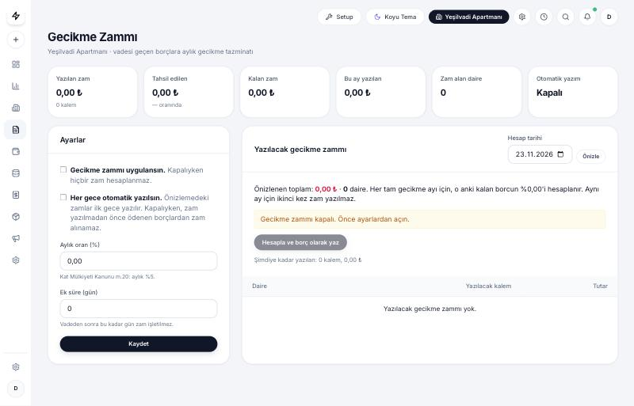
Gecikme Zammı Motoru ekranı (demo veri)
Bu sayfada ne yapılır?
Ayarlar: 'Gecikme zammı uygulansın' (kapalıyken hiç hesaplanmaz), 'Her gece otomatik yazılsın', aylık oran (%), ek süre (gün). Not: Kat Mülkiyeti Kanunu m.20'ye göre aylık %5.
Yazılacak gecikme zammı: hesap tarihi seç → Önizle → daire daire yazılacak kalemleri gör → Hesapla ve borç olarak yaz.
Özet: yazılan zam, tahsil edilen, kalan, bu ay yazılan, zam alan daire, otomatik yazım durumu.
Kurallar ve dikkat edilecekler
Vade + ek süre geçtikten sonra tamamlanan her ay için bir zam yazılır: tutar = o anki kalan borç × aylık oran.
Aynı borcun aynı ayı için ikinci kez zam yazılmaz.
Zamma zam işlemez; yalnızca aidat ve taksit borçlarına uygulanır.
Silinen bir zam kalemi bir daha yazılmaz (affedilmiş sayılır).
Sakinden para alma ekranı. En çok kullanılan sayfadır.
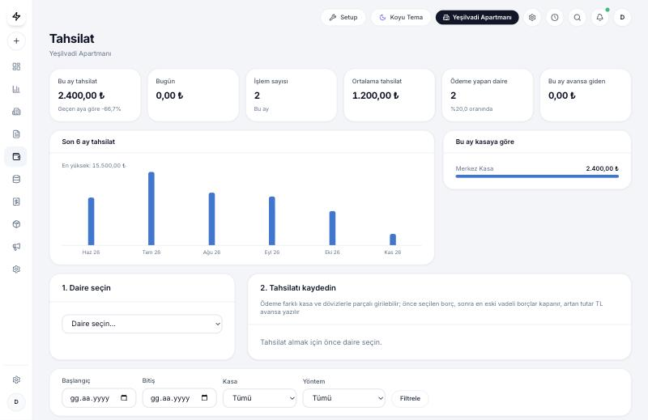
Tahsilat & Makbuz Kesimi ekranı (demo veri)
Bu sayfada ne yapılır?
Özet: bu ay tahsilat (geçen aya göre), bugün, işlem sayısı, ortalama tahsilat, ödeme yapan daire, bu ay avansa giden; son 6 ay grafiği; kasaya göre dağılım.
Son tahsilatlar: tarih, kasa, yöntem filtresi; her satırda makbuz ve Hareketi iptal et (iptal nedeni zorunlu).
Adım adım
1. Daire seçin: listeden daireyi seç. Açık borçları listelenir.
2. Tahsilatı kaydedin: İstersen Ödeyen sakini seç, öncelikli borcu seç veya borçların yanına tutar yaz ('Tamamı' düğmesi kalanın tamamını yazar).
Ödeme parçasını gir: kasa / banka, tutar, döviz kasasıysa kur, ödeme şekli (nakit, havale, POS…). Farklı kasalara bölünmüş ödeme için + Ödeme parçası ekle.
Açıklama yaz → Tahsilatı kaydet. Makbuz otomatik oluşur.
Kurallar ve dikkat edilecekler
Dağıtım sırası: önce elle tutar yazılan borçlar, sonra seçilen öncelikli borç, sonra en eski vadeli borçlar. Artan para TL avans olur.
Ödeyen sakin seçilirse otomatik dağıtım yalnızca onun sorumlu olduğu ve daire geneli borçlara yapılır (kiracı ödüyorsa mülk sahibinin borcuna yazılmaz).
Parçalardan biri hatalıysa hiçbiri kaydedilmez.
Döviz kasasına giren para, girilen kurla TL karşılığıyla borca yazılır.
İptalde ödenen borçlar yeniden açılır, avans geri alınır; avans başka borçta kullanılmışsa önce o borç iptal edilmelidir.
Bağlantılı sayfalar
Makbuz · Daire Hesap Ekstresi · Kasa & Banka
Patrona söyle: "Tahsilatı daireyi seçip tutarı yazarak tek ekrandan alıyoruz; sistem parayı en eski borçtan kapatıyor, fazlasını avansa atıyor, makbuzu kendisi kesiyor."
Bankadan indirilen ekstreyi (CSV) yükleyip satırları tahsilata, gelire veya gidere dönüştürür; banka ile kasa defterini karşılaştırır.
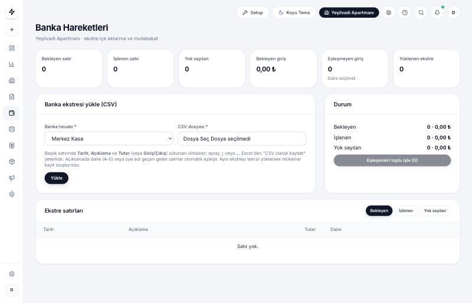
Banka Ekstresi Eşleştirme ekranı (demo veri)
Bu sayfada ne yapılır?
Durum kutusu: bekleyen, işlenen, yok sayılan satır sayısı ve tutarı.
Ekstrede karşılığı olmayan kasa hareketleri: ekstre tarihlerinde kasada kayıtlı ama bankada görünmeyen hareketler; eksik veya hatalı giriş olabilir.
İşlenen satırdan makbuza gidilir.
Adım adım
Bankanın internet şubesinden hesap hareketlerini Excel olarak indir, 'CSV olarak kaydet'.
Banka hesabını ve CSV dosyasını seç → Yükle. Başlık satırında Tarih, Açıklama ve Tutar (veya Giriş/Çıkış) sütunları olmalıdır.
Açıklamasında daire (A-5, Daire 5) veya sakin adı geçen gelen satırlar otomatik o daireyle eşleşir.
Bekleyen sekmesinde her satır için: gelen paraysa daire seç → Tahsil et (daire yoksa kategori seç → Gelir yaz); giden paraysa kategori seç → Gider yaz veya Mevcut gidere bağla ile bekleyen bir faturayı öde; ilgisizse Yok say.
Eşleşen bütün gelen satırları tek seferde işlemek için Eşleşenleri toplu işle.
Kurallar ve dikkat edilecekler
Aynı ekstreyi tekrar yüklemek mükerrer satır oluşturmaz.
Satır, bankadaki kendi tarihiyle kaydedilir; kapalı döneme düşen satır işlenmez.
Mevcut gidere bağlanan satır yeni gider açmaz, faturayı öder (çift gider olmaz).
İşlenmiş bir hareket iptal edilirse banka satırı yeniden 'bekleyen' olur.
Çift taraflı muhasebe kayıtlarının tamamı. Kayıtlar yalnızca eklenir, değiştirilemez.
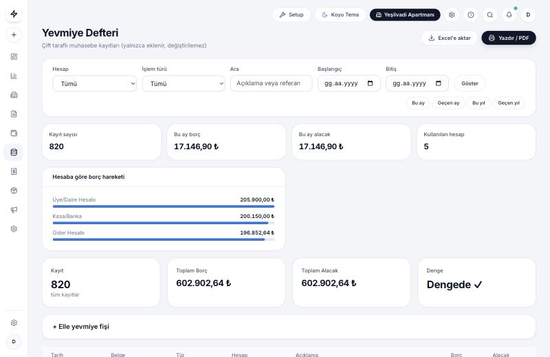
Yevmiye Defteri ekranı (demo veri)
Bu sayfada ne yapılır?
Filtre: hesap (Kasa/Banka, Üye/Daire Hesabı, Üye Avans Hesabı, Gelir, Gider, Açılış, Kur Farkı), işlem türü, arama, tarih aralığı.
Kartlar: kayıt sayısı, bu ay borç ve alacak, kullanılan hesap; Denge kutusu toplam borç = toplam alacak ise 'Dengede ✓' gösterir.
+ Elle yevmiye fişi: tarih, açıklama ve satırlar (gelir / gider kategorisi, kur farkı, açılış hesapları; her satırda yalnızca borç veya yalnızca alacak). Fiş dengede değilse kaydedilmez.
Elle fişi iptal et (neden zorunlu). Excel / PDF çıktısı.
Kurallar ve dikkat edilecekler
Kasa ve daire hesaplarına elle fiş kesilemez; onlar kendi ekranlarındaki işlemlerle oluşur.
Elle fiş mizan ve yevmiyede görünür; kasa bakiyesini değiştirmez.
Dönemi seç → … bordrosunu oluştur. Aktif ve maaşı girilmiş her personel için 'Personel' kategorisinde bir gider oluşur.
Her satırda Öde ile kasayı seçip maaşı öde.
Kurallar ve dikkat edilecekler
Aynı personel ve dönem için ikinci kayıt yazılmaz.
Kapalı döneme bordro oluşturulamaz.
10Saha, Envanter & Güvenlik
Sitenin günlük işletmesi.
Görev & Bakım Takibi
Menü: Saha, Envanter & Güvenlik → Görev & Bakım TakibiAdres:/sites/{id}/tasks
Yönetimin yapılacaklar listesi.
Bu sayfada ne yapılır?
Görev oluştur: başlık, sorumlu, son tarih, öncelik, kategori, açıklama.
Durumunu güncelle (Bekliyor / Devam Ediyor / Tamamlandı), sil. Öncelik: Düşük / Orta / Yüksek; kategori: Bakım, Temizlik, Güvenlik, Diğer. Geciken görevler raporlarda görünür.
Stok & Sarf Malzeme
Menü: Saha, Envanter & Güvenlik → Stok & Sarf MalzemeAdres:/sites/{id}/inventory
Ücretli alanlarda ücret, onayla birlikte daireye borç olarak yazılır.
Aynı alanda çakışan saatlere ve alanın çalışma saatleri dışına rezervasyon yapılamaz.
Güvenlik, Ziyaretçi & Kargo
Menü: Saha, Envanter & Güvenlik → Güvenlik, Ziyaretçi & KargoAdres:/sites/{id}/security
Güvenlik kulübesinin kayıt defteri.
Bu sayfada ne yapılır?
Kayıt türünü seç: Kargo (Beklemede / Teslim Edildi / İptal), Otopark (Otoparkta / Ayrıldı), Ziyaretçi (İçeride / Ayrıldı): daire, kişi / açıklama, kargo firması, takip no, plaka, not.
Durumu güncelle (ör. kargo teslim edildi), sil.
Arıza & Destek Talepleri
Menü: Saha, Envanter & Güvenlik → Arıza & Destek TalepleriAdres:/sites/{id}/tickets
Sakinlerden gelen arıza ve şikâyetler. Mobilden ve portaldan açılan talepler de burada görünür.
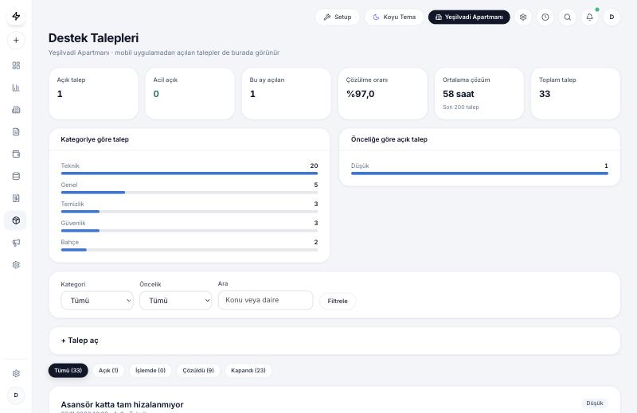
Arıza & Destek Talepleri ekranı (demo veri)
Bu sayfada ne yapılır?
Özet: açık talep, acil açık, bu ay açılan, çözülme oranı, ortalama çözüm süresi; kategoriye ve önceliğe göre dağılım.
+ Talep aç: konu, daire (boşsa ortak alan), kategori, öncelik, açıklama.
Talep satırında yazışma: sakine yanıt yaz ve fotoğraf ekle; durum (Açık / İşlemde / Çözüldü / Kapandı) ve yanıtı güncelle; talebi sil.
Sekmeler: Tümü, Açık, İşlemde, Çözüldü, Kapandı.
Patrona söyle: "Sakin arızayı telefondan fotoğrafla bildiriyor, biz buradan yanıtlıyoruz; çözüm sürelerimizi de ölçüyoruz."
11Kurul, İletişim & Arşiv
Sakinlerle iletişim ve yönetimin resmi kayıtları.
Genel Kurul & Toplantılar
Menü: Kurul, İletişim & Arşiv → Genel Kurul & ToplantılarAdres:/sites/{id}/meetings
Olağan / olağanüstü genel kurul ve yönetim kurulu toplantıları.
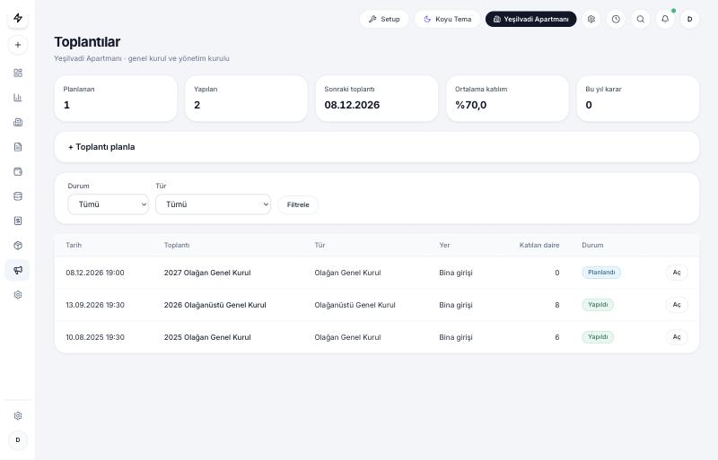
Genel Kurul & Toplantılar ekranı (demo veri)
Bu sayfada ne yapılır?
+ Toplantı planla: başlık, tür, tarih ve saat, yer, gündem.
Liste: tarih, toplantı, tür, yer, katılan daire, durum (Planlandı / Yapıldı); Aç ile detay.
Toplantı detayı: bilgileri ve tutanağı düzenle; Hazirun (katılım) cetveli (hangi daire katıldı işaretle → Hazirunu kaydet → Hazirun cetveli yazdır); Alınan kararlar (karar no, konu, metin → Karar ekle); toplantıyı sil.
Bağlantılı sayfalar
Karar Defteri · Rapor Merkezi → Hazirun Cetveli, Toplantı Katılımı
Karar Defteri
Menü: Kurul, İletişim & Arşiv → Karar DefteriAdres:/sites/{id}/decisions
Yönetim kararlarının resmi kaydı.
Bu sayfada ne yapılır?
Karar ekle: karar no, tarih, konu, karar metni, katılımcılar.
Düzenle, sil, Yazdır / PDF.
Toplantıdan eklenen kararlar da burada listelenir.
Yeni anket: soru, bitiş tarihi, seçenekler (her satıra bir tane, 2-10 adet) → Anketi başlat.
Her anket kartında katılım (kaç daire oy kullandı) ve sonuçlar; aç / kapat, sil.
Kurallar ve dikkat edilecekler
Her daire bir oy kullanır.
Oy kullanıldıktan sonra yalnızca bitiş tarihi değiştirilebilir.
Toplu Bildirim Gönderimi
Menü: Kurul, İletişim & Arşiv → Toplu Bildirim GönderimiAdres:/sites/{id}/notifications
Seçilen dairelere uygulama içi bildirim gönderir.
Bu sayfada ne yapılır?
Başlık, hedef (tüm site / blok / seçili daireler), mesaj → Gönder.
Gönderilenler listesi.
Kurallar ve dikkat edilecekler
Bildirimler portal ve mobil uygulamanın bildirim kutusunda görünür. Telefona anlık (push) bildirim için ayrıca bir servis entegrasyonu gerekir (henüz yok).
Otomatik Borç Hatırlatıcı
Menü: Kurul, İletişim & Arşiv → Otomatik Borç HatırlatıcıAdres:/sites/{id}/reminders
Vadesi geçmiş borcu olan dairelere hatırlatma.
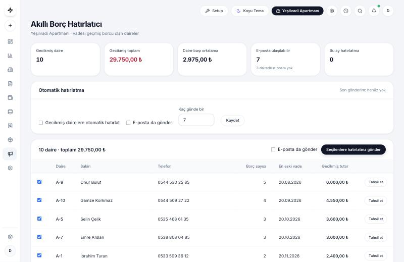
Otomatik Borç Hatırlatıcı ekranı (demo veri)
Bu sayfada ne yapılır?
Özet: gecikmiş daire, gecikmiş toplam, daire başı ortalama, e-postayla ulaşılabilir daire, bu ay hatırlatma.
Liste: daire, sakin, telefon, borç sayısı, en eski vade, gecikmiş tutar; satırdan Tahsil et.
Daireleri işaretle → isteğe bağlı 'E-posta da gönder' → Seçilenlere hatırlatma gönder.
Otomatik hatırlatma: 'Gecikmiş dairelere otomatik hatırlat', 'E-posta da gönder', kaç günde bir → Kaydet. Her sabah 09:00'da kontrol edilir.
Kim, ne zaman, ne yaptı? Finansal ve yönetimsel her işlemin silinemez izi.
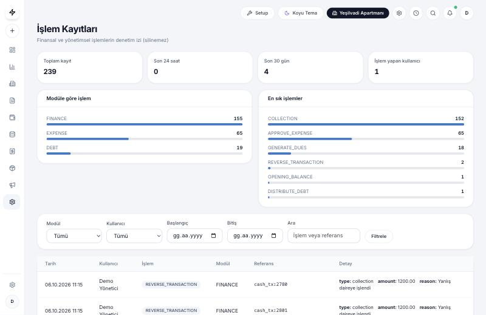
İşlem & Denetim Kayıtları ekranı (demo veri)
Bu sayfada ne yapılır?
Özet: toplam kayıt, son 24 saat, son 30 gün, işlem yapan kullanıcı; modüle göre ve en sık işlemler.
Filtre: modül, kullanıcı, tarih, arama. Her satırda tarih, kullanıcı, işlem (ör. COLLECTION, REVERSE_TRANSACTION, APPROVE_EXPENSE), modül, referans ve detay (tutar, neden, değişen alanların eski / yeni değeri).
Patrona söyle: "Her tahsilat, iptal, silme ve ayar değişikliği kimin yaptığıyla kayıtlı; bu kayıt silinemiyor."
Site Ayarları & Yöneticiler
Menü: Rapor, Denetim & Ayarlar → Site Ayarları & YöneticilerAdres:/sites/{id}/settings
Sitenin kimlik bilgileri, dönem / yıl kapatma, yöneticiler ve rol izinleri.
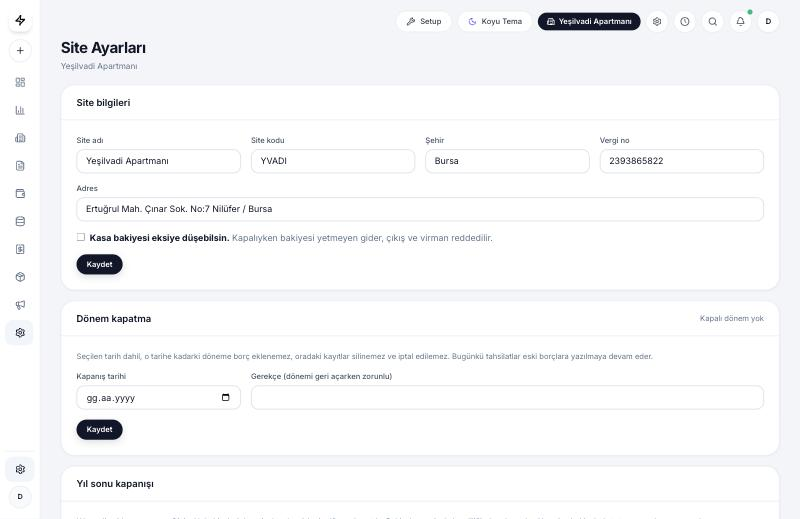
Site Ayarları & Yöneticiler ekranı (demo veri)
Bu sayfada ne yapılır?
Site bilgileri: ad, kod, şehir, vergi no, adres; 'Kasa bakiyesi eksiye düşebilsin' seçeneği.
Dönem kapatma (yalnızca site sahibi): kapanış tarihi seç → o tarih dahil öncesine borç eklenemez, kayıt silinemez / iptal edilemez. Geri açmak için gerekçe zorunlu ve denetim kaydına yazılır.
Yıl sonu kapanışı (yalnızca site sahibi): tamamlanmış yılı seç → Yılı kapat. Yılın gelir-gider sonucu ve 31 Aralık bakiyeleri kaydedilir, dönem 31 Aralık'a kadar kapanır. Defter bakiyelerle tutmuyorsa kapanış yapılmaz. Kapatılan yıllar kartta listelenir.
Yöneticiler: siteye kullanıcı ekle, rolünü seç (Yönetici / Muhasebeci / İzleyici), çıkar.
Rol izinleri: muhasebeci ve izleyici için her modülde Erişim yok / Görüntüleme / Görüntüleme + işlem → İzinleri kaydet.
Tehlikeli işlemler: Siteyi sıfırla (tüm hareketleri siler, yapı kalır) ve Siteyi sil. Onay için site kodu yazılır.
Kurallar ve dikkat edilecekler
Dönem en geç dünden önceki bir tarihe kadar kapatılabilir.
Kapalı dönem olsa bile bugünkü tahsilatlar eski borçlara yazılmaya devam eder.
Site içi arama
Menü: Üst çubuk → büyüteçAdres:/sites/{id}/search
Sitede hızlı arama.
Bu sayfada ne yapılır?
Daire, sakin, borç, destek talebi ve gider sonuçları ayrı başlıklar altında; her sonuç ilgili sayfaya götürür.
13Sistem yönetimi (süper admin)
Yalnızca süper adminin gördüğü bölümler ve sunucu komutları.
Sistem Kayıtları
Menü: Süper admin menüsüAdres:/system/audit
Bütün sitelerin ve sistemin denetim kaydı (giriş, kullanıcı ve rol değişikliği, yedek geri yükleme dahil).
Yedekler
Menü: Süper admin menüsüAdres:/system/backups
Veritabanı yedekleri.
Bu sayfada ne yapılır?
Şimdi yedek al.
Yedeği geri yükle: yedeği seç, şifreni ve onay ifadesini yaz. Geri yüklemeden önce mevcut durumun güvenlik yedeği otomatik alınır.
Kurallar ve dikkat edilecekler
Her gece 03:00'te otomatik yedek alınır, eski yedekler temizlenir.
Yedekler şu an aynı sunucuda durur; dış depoya kopyalanmaz (yol haritasında).
Kurulum sihirbazı
Menü: İlk açılış / SetupAdres:/setup
Sistemi ilk kez kuran ekran.
Bu sayfada ne yapılır?
Kurulum türü (temiz / demo), kurulum kodu, veritabanı bilgileri, ilk yöneticinin adı-e-postası-şifresi, ilk site adı, kodu ve blokları. Her adımda 'Bu adımı anlat' açıklaması vardır.
Sunucu komutları (teknik ekip için)
Komut
Ne yapar
php artisan app:setup
Sıfırdan kurulum (ortam, veritabanı, ilk yönetici, ilk site). Tekrar çalıştırmak güvenlidir.
Ortak alan rezervasyonu ister ve iptal eder; yönetim onaylar.
Toplantılar
/portal/{site}/meetings
Toplantıları ve alınan kararları görür.
Hesabım
/portal/account
Şifresini değiştirir.
Güvenlik: Sakin yalnızca kendi dairesini görür. Daireden ayrılan veya bağlantısı kaldırılan sakinin erişimi anında biter. Sakin, başka bir sitenin adresini yazsa bile 403 hatası alır.
Henüz yok: Sakinin portaldan online ödeme yapması veya dekont yüklemesi bilinçli olarak ertelendi.
15Otomatik (gece) işleri
Sistem kimse dokunmadan şunları yapar. Sunucuda her dakika çalışan tek bir zamanlayıcı (cron) satırı gerekir.
Saat
İş
Açıklama
02:00
Aidat ve gecikme zammı
Otomatik seçeneği açık sitelerde o ayın aidatlarını ve vadesi geçen borçların zamlarını yazar.
03:00
Yedek
Veritabanını sıkıştırılmış olarak yedekler, eskileri temizler.
04:00
Uzlaştırma
Yevmiye defterini kasa, daire borcu ve avans bakiyeleriyle karşılaştırır. Tutmazsa hata verir.
09:00
Borç hatırlatma
Otomatik hatırlatması açık sitelerde gecikmiş dairelere hatırlatma (ve istenirse e-posta) gönderir.
Her dakika
E-posta kuyruğu
Bekleyen e-postaları gönderir.
Tekrar çalışsa zarar vermez: aynı ayın aidatı ikinci kez yazılmaz.
Bir site hata verirse diğerleri durmaz; hatalı site ertesi gece yeniden denenir.
Her site otomatik aidat, zam ve hatırlatmayı kendi ayar sayfasından açar / kapatır.
16Günlük, aylık ve yıllık iş akışları
Hangi iş hangi sırayla, hangi sayfadan yapılır?
A. Yeni bir site kurmak
Konut & Siteler → + Yeni site oluştur (Merkez Kasa ve kategoriler otomatik gelir).
Blok, Daire & Gruplar → blokları ve daireleri ekle (Toplu ekle ile hızlıca), m² ve arsa payını gir.
Sakin & Üye Listesi → sakinleri ekle, davet kodlarını dağıt.
Gelir - Gider Tablosu ve Bütçe ile ayı değerlendir.
Ay sonu kontrolü bittiğinde Site Ayarları → Dönem kapatma ile ayı kilitle.
D. Yıl sonu ve genel kurul
Bütçe & Gerçekleşen ve Mali Durum Tablosu ile yılı raporla.
Site Ayarları → Yıl sonu kapanışı ile yılı kapat.
Genel Kurul & Toplantılar'da toplantıyı planla, Duyuru ile sakinlere bildir.
Toplantı günü hazirun cetvelini doldur ve yazdır, kararları ekle; kararlar Karar Defteri'ne düşer.
Yeni yılın bütçesini Önceki yılı kopyala ile hazırla.
E. Sık karşılaşılan durumlar
Durum
Ne yapılır, nereden?
Yanlış daireye tahsilat girildi
Tahsilat listesinde hareketi iptal et (neden yaz), doğru daireye yeniden gir.
Yanlış tutarlı borç yazıldı
Ödeme alınmadıysa Borçlandırma'da düzenle; alındıysa önce tahsilatı iptal et.
Sakin borcunu taksitle ödemek istiyor
Borçlandırma'da borcu Taksitlendir.
Sakin uzun süredir ödemiyor
Borçlandırma'da borca İcra işareti koy; Rapor Merkezi → İcra Takibindeki Borçlar.
Sakin fazla ödedi, parasını istiyor
Avans & Kredi Mahsup → İade et.
Daire satıldı
Eski sakini Geçmişe taşı, yeni sakini ekle. Borçlar dairede kalır.
Fatura bir dairenin kusurundan doğdu
Gideri girerken daireye yansıt.
Bankadan dövizi TL'ye çevirdik
Kasa & Banka → Virman; hedefe giren TL tutarını yaz, kur farkı otomatik.
17Güvenlik ve veri bütünlüğü
Sistemin "neden güvenilir" olduğunu anlatan maddeler.
Konu
Nasıl sağlanıyor?
Para hassasiyeti
Tutarlar kuruş (tam sayı) olarak hesaplanır; bölüştürmelerde artan kuruş kaybolmaz.
Yarım kayıt olmaz
Her işlem tek bir veritabanı işlemidir: ya tamamı olur ya hiçbiri.
Aynı anda iki işlem
İşlem sırasında ilgili daire, kasa ve borç kilitlenir; iki kişi aynı anda tahsilat girse bakiye bozulmaz.
Çift taraflı kayıt
Her hareket borç = alacak iki satır yazar; yevmiye her an dengededir.
Silme yok, ters kayıt var
Muhasebe kayıtları değiştirilmez; düzeltme zıt kayıtla yapılır.
Mükerrer koruması
Aidat, gecikme zammı, sayaç payı, banka satırı aynı anahtarla ikinci kez yazılmaz.
Gece uzlaştırma
Defter ile kasa / borç / avans bakiyeleri her gece karşılaştırılır.
Dönem kilidi
Kapatılan döneme kayıt girilemez, oradaki kayıt iptal edilemez; geri açma gerekçeli ve kayıtlı.
Denetim izi
Her işlem kullanıcı, zaman ve detayla kayıtlı; değişikliklerde eski / yeni değer tutulur.
Erişim
Rol ve modül izinleri sunucuda zorlanır; her site yalnızca kendi verisini görür.
Giriş güvenliği
Şifre sıfırlama, iki adımlı doğrulama, hatalı giriş sınırı, davet kodu deneme sınırı.
Belgeler
Yüklenen dosyalar korumalı alanda; yalnızca yetkili indirir.
Yedek
Her gece otomatik yedek; geri yüklemeden önce güvenlik yedeği.
Test
Sistemin davranışları 580'den fazla otomatik testle doğrulanıyor.
18Patron sunumu: senaryo ve olası sorular
15 dakikalık canlı demo akışı ve hazır cevaplar.
Sunum akışı (15 dakika)
Dakika
Ekran
Ne göster, ne söyle
0-2
Genel Portföy Panosu
"Beş sitenin tahsilatı, borcu, kasası ve bekleyen işleri tek ekranda." Uyarılar kutusunu göster.
2-4
Siteler → bir site → Site Finans Panosu
Tahsilat hunisi, kasa, borçlu daireler.
4-6
Aidat & Otomatik Tahakkuk
"Tanımı bir kez yapıyoruz, her gece kendiliğinden yazılıyor, mükerrer olmuyor."
6-8
Tahsilat
Daire seç, 1.500 TL gir: borç kapanır, 500 avans olur, makbuz çıkar.
8-9
Banka Ekstresi
"Ekstreyi yüklüyoruz, daireler otomatik eşleşiyor."
9-10
Gider & Fatura Onayı
Fatura gir, kasadan öde.
10-12
Alacak Yaşlandırma → Borç Hatırlatıcı
"Kim kaç gündür borçlu; tek tuşla hatırlatma."
12-13
Mali Durum Tablosu / Yevmiye
"Defter dengede; bilanço her tarih için doğru."
13-14
Arıza Talepleri ve Sakin portalı
"Sakin telefondan arıza bildiriyor, borcunu görüyor, oy veriyor."
14-15
Denetim Kayıtları + Site Ayarları
"Her işlem kimin yaptığıyla kayıtlı; dönem kapatılınca kimse eski kaydı değiştiremez."
Olası sorular ve cevaplar
Soru
Cevap
Muhasebeci para çıkarabilir mi, kontrol var mı?
Varsayılan olarak finans modüllerinde işlem yapabilir; yönetici Site Ayarları → Rol izinleri'nden modül modül kısıtlar. Kasa eksiye düşmez, her işlem denetim kaydında. İki kişi onayı şu an yok.
Yanlış girilen kaydı biri silip izini kaybettirebilir mi?
Hayır. Muhasebe kaydı silinmez, ters kayıtla düzeltilir; işlem denetim kaydına yazılır. Kapalı dönemde iptal de yapılamaz.
Aynı aidat iki kez yazılabilir mi?
Hayır, her borcun dönem + tanım + daire anahtarı var; ikinci çalıştırma atlanır.
Sakin taşınınca borç ne olur?
Borç dairede kalır; eski sakin geçmişe taşınır, yeni sakin dairenin hesabını devralır.
Banka ile kasa tutuyor mu nasıl anlarız?
Banka ekstresi sayfası, ekstrede karşılığı olmayan kasa hareketlerini listeler; gece uzlaştırma defterle bakiyeleri karşılaştırır.
Döviz tutabiliyor muyuz?
Evet; USD / EUR kasası açılır, tahsilat ve ödeme kurla yapılır, kur farkı otomatik hesaplanır.
Raporları dışarı verebiliyor muyuz?
25 hazır rapor ve tüm mali tablolar yazdırılır / PDF olarak kaydedilir ve Excel'e aktarılır.
Veriler kaybolursa?
Her gece otomatik yedek alınır, tek tıkla geri yüklenir. Yedeğin buluta kopyalanması yol haritasında.
Sakin online ödeyebilir mi?
Şu an hayır, bilinçli olarak ertelendi. Tahsilat yönetim panelinden veya banka ekstresinden giriliyor.
SMS gönderiyor mu?
Şu an e-posta ve uygulama içi bildirim var; SMS / WhatsApp sağlayıcı entegrasyonu yol haritasında.
Altın kural: Bilmediğin bir soruda "o kısmı kontrol edip size dönerim" de. Eksikleri saklama; "yol haritasında" diye sun.
19Bilinen eksikler ve yol haritası
Dürüst olunması gereken konular. Patron sorarsa "planlı" diye sunulur.
Konu
Durum
Sakin online ödeme / dekont yükleme
Bilinçli olarak ertelendi.
SMS / WhatsApp
Yok; e-posta ve uygulama içi bildirim var.
Mobil push bildirim
Bildirimler uygulama içinde; telefona anlık bildirim için servis entegrasyonu gerekli.
e-Fatura / e-Arşiv / e-Defter
Yok.
Banka API entegrasyonu
Yok; banka ekstresi CSV ile yükleniyor.
Yedeğin dış depoya kopyalanması
Yok; yedekler aynı sunucuda.
İki kişi onayı (yüksek tutarlı gider)
Yok.
Toplu aidat artışı, boş daire muafiyeti, ay ortası taşınmada orantılama
Yok.
Daire / sakin Excel'den toplu içe aktarma
Yok; daireler 'Toplu ekle' ile numara aralığından eklenebilir.
Gerçek PDF üretimi
Tarayıcının yazdır → PDF olarak kaydet özelliği kullanılıyor.
Periyodik kontrol takvimi (asansör, yangın tüpü) hatırlatması
Belge arşivinde bitiş tarihi uyarısı var; tekrarlayan takvim yok.
KVKK modülü (aydınlatma, rıza, veri silme talebi)
Yok.
Çok dilli arayüz
Yalnızca Türkçe.
20Sözlük
Sistemde geçen terimler.
Terim
Anlamı
Tahakkuk
Borcun kayda geçmesi (para henüz gelmemiş olabilir).
Tahsilat
Daireden para alınması.
Avans
Dairenin fazla ödediği, sonraki borçlara sayılacak para.
Mahsup
Avansın borca düşülmesi.
Virman
İki kasa / banka hesabı arasında para aktarımı.
Yevmiye
Bütün muhasebe kayıtlarının tarih sırasıyla tutulduğu defter.
Mizan
Hesapların borç-alacak toplamlarını gösteren kontrol tablosu.
Mali durum tablosu (bilanço)
Belli bir gündeki varlık ve yükümlülükler.
Yaşlandırma
Borçların kaç gündür gecikmede olduğuna göre gruplanması.
Arsa payı
Dairenin arsadaki payı; aidat bölüşümünde kullanılabilir.
Hazirun cetveli
Genel kurula katılanların imza listesi.
Kur farkı
Döviz alım maliyeti ile bozdurma / ödeme anındaki değer arasındaki fark.
Ters kayıt
Hatalı kaydı silmeden, zıt yönde yeni kayıtla düzeltme.
Dönem kapatma
Belirli bir tarihe kadarki kayıtların kilitlenmesi.
Davet kodu
Sakinin kendi hesabını daireye bağlamasını sağlayan tek kullanımlık kod.
Denetim kaydı
Kim, ne zaman, hangi işlemi yaptı bilgisinin silinemez kaydı.